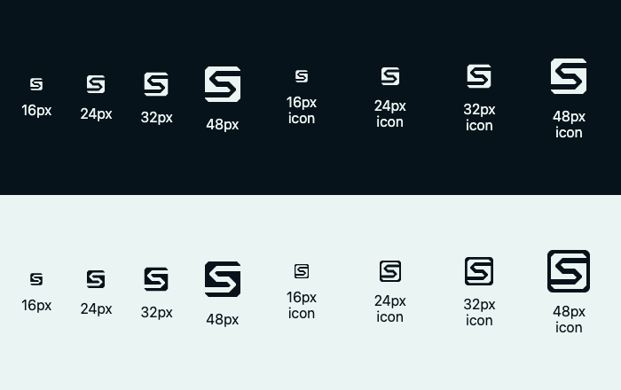

The new shell.
The same scientific record.
STRATA-015 Checkpoint B · Implementation review only. Baseline 7690b59; approved identity 223e22e. No merge or production deployment.
NOAA screenshots use a deterministic regression fixture and a fixed November 14, 2026 clock. They are not current observations. Scientific content canvases were compared separately from the shell. Human screen-reader, physical-device and browser-chrome checks remain unverified.
Results and limitations · 78 route/width checks · Scientific interactions · Text and load checks · Complete file list
Deep Time
Scientific canvas only · baseline / implementation
Signals
Scientific canvas only · baseline / implementation
Atlas
Scientific canvas only · baseline / implementation
Orbital
Scientific canvas only · baseline / implementation
Oceanography
Scientific canvas only · baseline / implementation
Frontier
Scientific canvas only · baseline / implementation
Studio
Scientific canvas only · baseline / implementation
Orbital Voyager
Scientific canvas only · baseline / implementation
Oceanography Pawtuxet
Scientific canvas only · baseline / implementation
Frontier Reconciliation
Scientific canvas only · baseline / implementation
Research Bass 2003
Scientific canvas only · baseline / implementation
Native icon sizes

2× density · All screenshot hashes